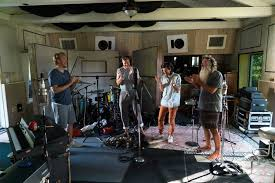

Los Inicios (2008-2012)
Imagine Dragons se formó en Las Vegas en 2008 cuando Dan Reynolds conoció a Wayne Sermon en la Universidad de Brigham Young. La química musical fue instantánea, y pronto se unieron Ben McKee y Daniel Platzman, completando la formación que conquistaría el mundo.
El Éxito Mundial (2012-presente)
Con el lanzamiento de "Night Visions" en 2012 y el fenómeno global de "Radioactive", Imagine Dragons redefinió el rock alternativo moderno. Su sonido único fusiona rock, pop y elementos electrónicos, creando himnos que resuenan con millones de fans.
Evolución Musical
La banda ha evolucionado constantemente, desde las introspectivas baladas hasta los himnos energéticos que llenan estadios. Cada álbum marca una nueva era creativa, manteniendo su esencia mientras exploran territorios musicales inexplorados.
